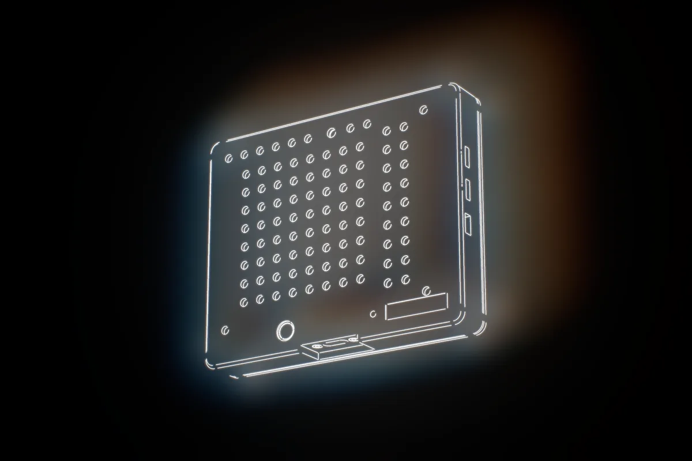

Prove your cameras agree on time.
Cameras, robot joints and sensors each keep their own clock. Your training data comes out misaligned, and nobody can say by how much. The Sync Beacon is a clock your cameras can film. It puts every frame on one timeline, and a Station Report shows the result.
A timing test instrument for rig validation and QA. Sold to labs and companies.

Every stream on your rig keeps its own time.
Each camera, joint log and depth stream stamps its data on a different clock. When they disagree, the dataset pairs images with the wrong joint readings.
Cameras stamp late
A USB camera’s timestamp is usually when the host received the frame, not when the sensor exposed it. Buffers and USB scheduling put an unknown delay between the two.
Clocks start apart and drift
Joint encoders log on the controller’s clock. Cameras log on the PC’s. They start at different moments and move apart over a session.
Nobody can prove by how much
Without a shared reference, skew shows up as a policy that almost works and an episode that gets rejected with no stated cause. There is no number to point to.
Episodes rejected on new rigs, with timing skew named as the top reason.
Dexset, 2026, vendor sourceA clock your cameras can film.
The beacon sits in view of your cameras and shows an LED clock that steps every 1 ms. Every camera films it. The decoder reads the clock in each frame, so every frame’s exposure time lands on one clock.
You get dropped frames, repeated frames, true frame intervals and the offset between cameras, per camera. It works with any camera that can see it. Nothing is wired to the cameras, and nothing changes in your recorder.
LED clock step. Selectable at 0.5 ms and 2 ms.
Green LED face, 525 nm. Green light passes the IR-cut filter on camera sensors.
Webcam, machine-vision camera or phone: if it can see the face, it can be measured.
Proof, not a feeling.
The Station Report lists, for each camera, how many frames were placed on the beacon clock, what was dropped or repeated, the true frame interval, and the offset to every other camera.
Keep it with the dataset. When a data buyer or a reviewer asks how well aligned the streams are, you have the measurement.
Accuracy on real cameras is measured for your rig in the Station Report.
Place it, record a minute, read the report.
Place it in view
Set the beacon where every camera can see its face, on a tripod or clamp. Up to 1.1 m from a 640 × 480 camera, 2.1 m at 720p, within 60° of straight on (calculated). Power by USB-C from your PC.
Record a test session
Set a short manual exposure and lock focus on the face. Record every camera over the same 60 s. A phone works for a first check.
Decode and read
Run the decoder on each video on your PC. Every frame lands on the beacon clock, and the Station Report shows drops, repeats, intervals and camera-to-camera offset.
Teams that need to know their rig is aligned.
Use it to check a rig before you record on it and again whenever the rig changes.
Data-collection teams
Validate each new station before it records. Re-check after a camera swap, a USB change or a rebuild. Hand your buyer a measurement of the timing, not a promise.
University labs
Know your cameras and arms line up before a study’s data collection starts, and put the figures in the methods. Invoiced by P-card, PO, card or ACH.
Rig builders and integrators
Commission a station, find the camera that runs late and confirm the fix, with the same instrument on every rig you build.
Check one station, or keep a beacon.
Start with a visit or a rental. Buy one when you want it on your own bench.
14-day rental
A beacon ships to your lab. A 60-minute setup call, a Station Report for one station, a closing call to go through it, and shipping both ways. US only.
Remote timing check
A beacon stays at your lab on loan. A setup call, a monthly timing check we decode with you, checks on demand after a camera swap or a rebuild, and a replacement if the unit fails.
Own one
A founding Sync Beacon, numbered on its calibration certificate. With a tripod adapter, a USB-C cable, the decoder and a quickstart. Includes a free Station Report call, 12 months of warranty and a 30-day return.
Prices in US dollars. Invoiced by card, ACH, P-card or purchase order. Shipped offers are US only. Sold and rented to labs and companies as test equipment, for timing measurement, rig validation and QA. Patent pending.
This device has not been authorized as required by the rules of the Federal Communications Commission. This device is not, and may not be, offered for sale or lease, or sold or leased, until authorization is obtained.
What it is, in numbers.
| LED clock | 1 ms step, with 0.5 ms and 2 ms selectable |
|---|---|
| LED face | 8 × 8 green LEDs, 525 nm |
| Cameras | Any camera that can see the face. No wiring to the camera |
| Placement | Up to 1.1 m from a 640 × 480 camera, 2.1 m at 720p, within 60° of straight on (calculated) |
| Reference pulses | Two SYNC outputs, 100 µs active-low pulses, 30 Hz by default |
| Clock stability | ±0.14 ppm over 3 h on the first unit measured (bench result, Oct 26, 2026). Each unit ships with its own calibration certificate |
| Power | USB-C, 5 V. No radio, no network |
| Mounting | 1/4”-20 tripod adapter |
| Decoder | Runs on your PC in Python 3 with numpy and OpenCV |
Find out how far apart your streams really are.
Send us your cameras and frame rates. We reply with the quickest way to measure your rig.